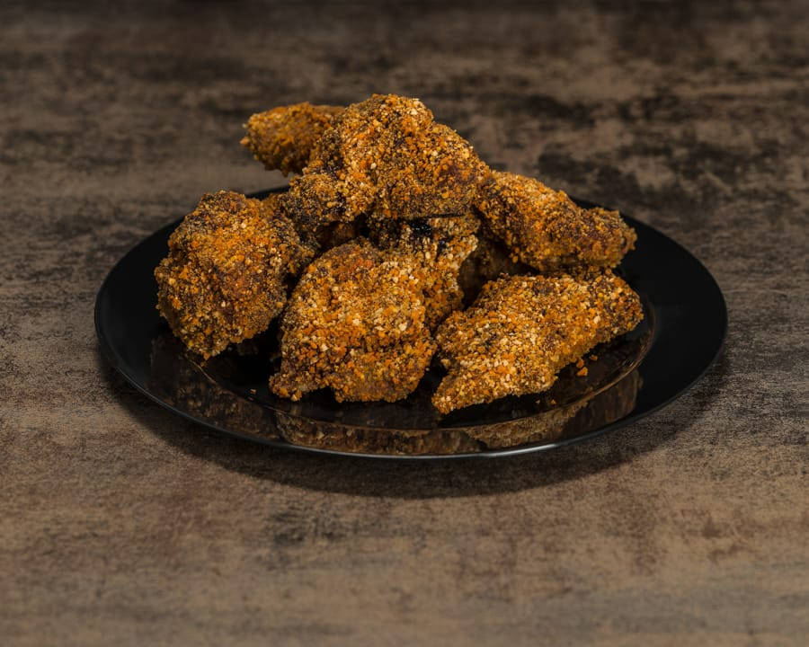
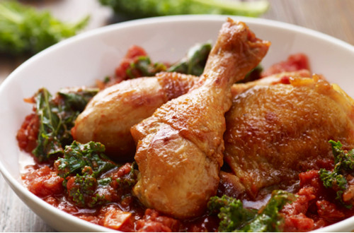
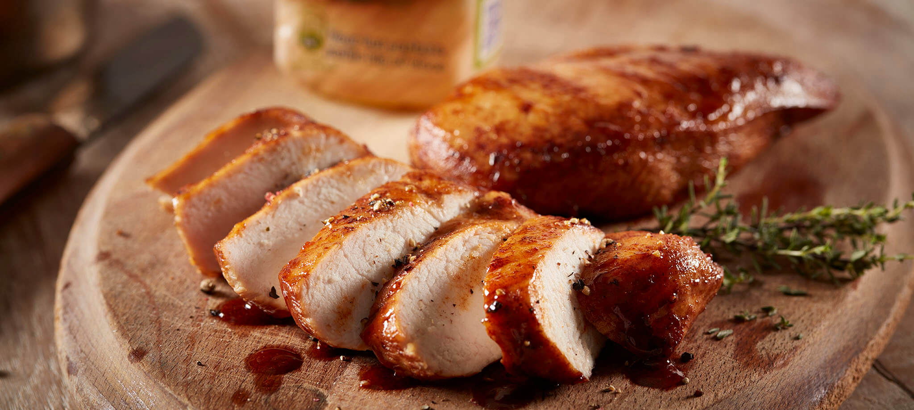
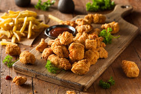

Menu
new Kippeling
Onze kippeling wordt gemaakt van de malste kippendij en worden elke dag vers voor u bereid met een heerlijke saus.

(Keuze uit: Knofloosaus, Chillisaus, Honing-Mosterd saus en BarbecuesausKip drumsticks
Onze kip drumsticks mogen natuurlijk niet ontbreken. Heerlijk met een salsa salade of gewoon lekker los. Elke dag is een mooie dag voor wat lekkere kip drumsticks!

(Keuze uit: Tomatensalsa, salade, Chillisaus, Honing-Mosterd saus en BarbecuesausKipfilet
Onze kipfilet is van uitmuntende kwaliteit. Heerlijk met een honingmosterd laagje bereid en lekker mals van binnen. Eén ding is zeker, zo heeft u kipfilet nog nooit geproeft!
Kip popcorn
Kip popcorn. Misschien heeft u er ooit van gehoord. Kip popcorn kunt u vergelijken met kipnuggets alleen word het anders bereidt. Hier worden heerlijke malse kippendij gebruikt en wordt het gebakken en niet gefrituurd.

(Keuze uit: Knofloosaus, Chillisaus, Honing-Mosterd saus en Barbecuesaus